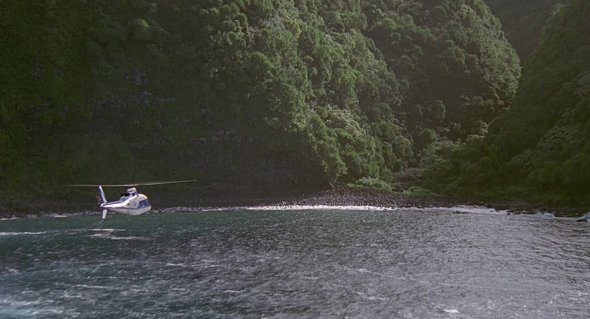
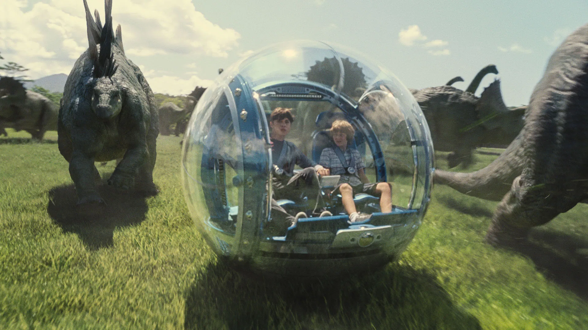

Sejarah

Pada akhir 1980-an, perusahaan bioteknologi International Genetic Technologies (InGen)
yang didirikan John Hammond membeli hak kepemilikan Isla Nublar dari pemerintah Kosta Rika.
Pulau itu dipilih karena lokasinya terpencil namun masih cukup dekat dengan daratan utama,
cocok untuk proyek berskala besar yang memerlukan kerahasiaan. InGen kemudian membangun
fasilitas penelitian genetika, laboratorium, pusat kendali, serta berbagai infrastruktur wisata.
Semua itu diproyeksikan untuk menjadi taman hiburan revolusioner bernama Jurassic Park,
yang menghadirkan satwa prasejarah hasil rekayasa genetika.
Wahana

Isla Nublar dirancang bukan sekadar taman,
melainkan sebuah pengalaman imersif di mana setiap sudut menawarkan keajaiban.
Di Mosasaurus Lagoon, pengunjung dapat menyaksikan predator laut raksasa melompat
keluar dari air dalam pertunjukan spektakuler. Sementara itu, Gyrosphere Valley
memberi kesempatan untuk berkeliling padang rumput luas di dalam kapsul kaca transparan,
memungkinkan wisatawan melihat kawanan Stegosaurus atau Triceratops dari dekat dengan aman.
Ada pula T-Rex Kingdom, area ikonik di mana sang raja predator muncul untuk memberi makan di
hadapan para penonton. Semua wahana ini dirancang agar manusia modern bisa merasakan
kedekatan dengan makhluk yang telah hilang jutaan tahun lalu, seolah benar-benar melakukan
perjalanan menembus waktu.
Wild Life

Lebih dari 20 spesies dinosaurus diciptakan ulang melalui rekayasa genetika oleh InGen.
Dari Brachiosaurus yang gagah menjulang di antara pepohonan tropis,
Velociraptor yang lincah dan cerdas, hingga predator legendaris seperti Tyrannosaurus rex,
setiap satwa membawa kisah evolusi yang hidup kembali. Ekosistem pulau diatur agar para dinosaurus
dapat berkembang seolah-olah mereka benar-benar hidup di habitat asli jutaan tahun lalu. Dengan hutan lebat,
padang savana buatan, hingga laguna laut dalam, Isla Nublar menjadi satu-satunya tempat di dunia di mana manusia bisa
menyaksikan era prasejarah bernafas kembali di hadapan mata mereka.